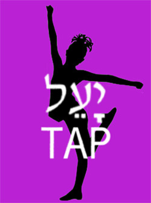

past performance | |
|  |
Ya’el Tap in STRENGTH Finding strength through dance… with special guests |
synopsis:Ya’el Tap, under the direction of Julie Rubin, is a new dance company featuring works that are mostly inspired by Hebrew music, and at times Israeli movement. The ensemble will be performing three pieces, choreographed by Julie Rubin. “Salaam – Peace” explores the theme of universal peace. Ya’el Tap uses dance to join together as one in a community of harmony. “L’Chaim - To Life!” celebrates the survival and flourish of Jewish existence after the Holocaust. The movement is a fusion of Israeli folk and Tap dance, creating a unique new style. We remember. We survive. We celebrate. We dance. “Sing Sing Sing” ends the performance, culminating with joy, happiness, peace, and strength! Ya’el Dancers: Aya Araki, Caryn Cooper, Jamie Cristello, Alexis North, Courtney Poulos, Julie Rubin, Lisa Schoenholt, Ariel Seidman-Wright, Andrea Torres, Stephanie Sine, Rachel Anne Wurman Movement of the People Dance Company, under the direction of Joya Powell, is known for their fusion of Modern Dance with Dances of the African Diaspora, as well as focusing on global sociopolitical disparities. They are pleased to be performing two traditional community building dances of Brazil, including: Dances of the Orixás and Samba. Rooted in the nuances of West African tradition, both the dances of the Afro-Brazilian religion Candomblé/Dances of the Orixás and Samba involve colorful, lively and uplifting movements. Moore Dance Collective, under the direction of Sarah Moore, is a pick-up ensemble of choreographers and dancers based in NYC. They are proud to be making their debut at The Wild Project. Performing ‘Betwixt & Between’, a contemporary work choreographed by Sarah Moore, will be ensemble members Leah Antonellis, Denise Brown, Carla Fazio, Trina Hines, Pamela Pollock, and Marie Stanek Chamberlain. | |
upcoming performances |
|||
 |
|||
| EVQ Film Festival 2018 August 20-25 |
|||
performance archives |
|||
| 2018 | 2017 | 2016 | 2015 |
| 2014 | 2013 | 2012 | 2011 |
| 2010 | 2009 | 2008 | 2007 |